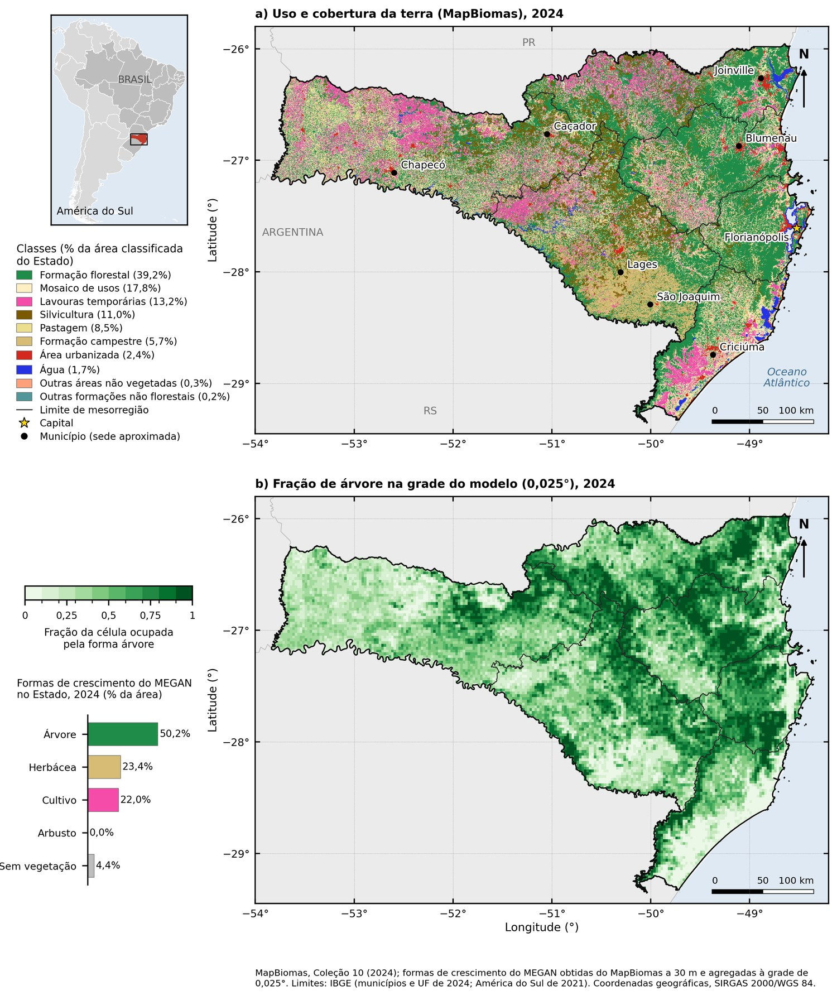
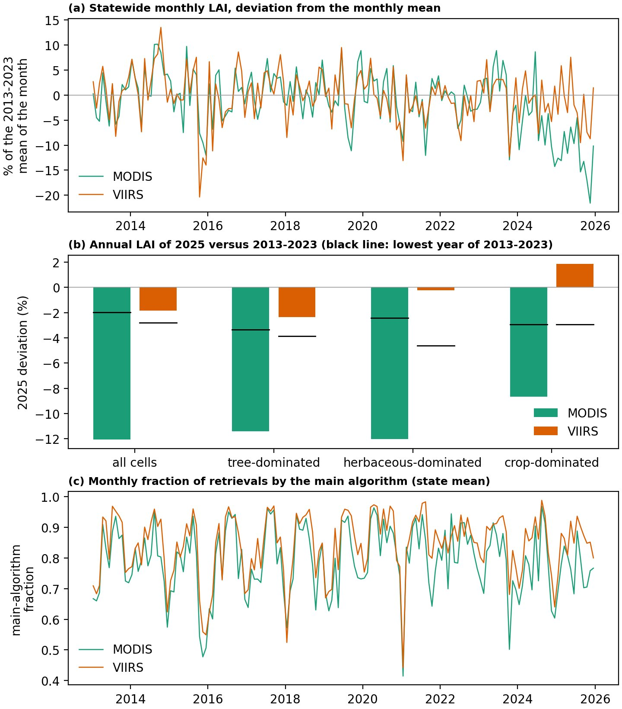
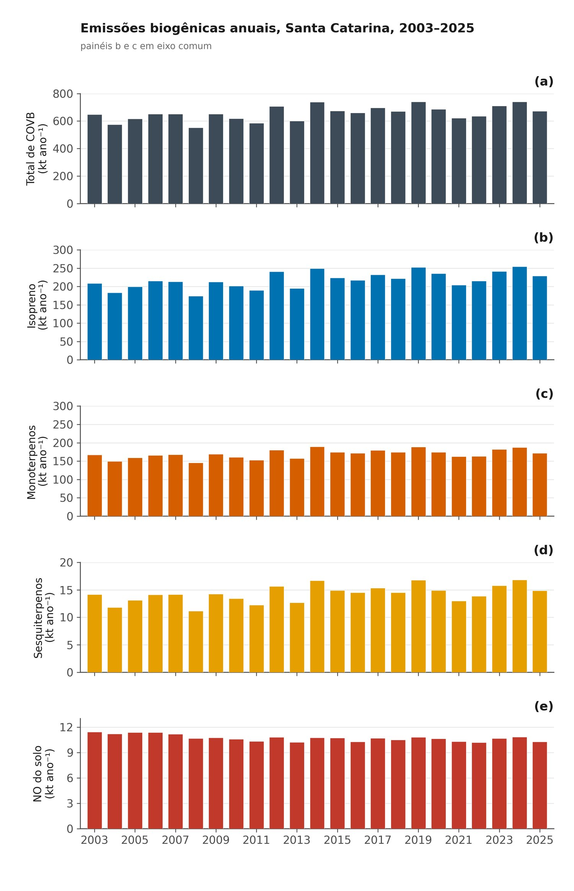
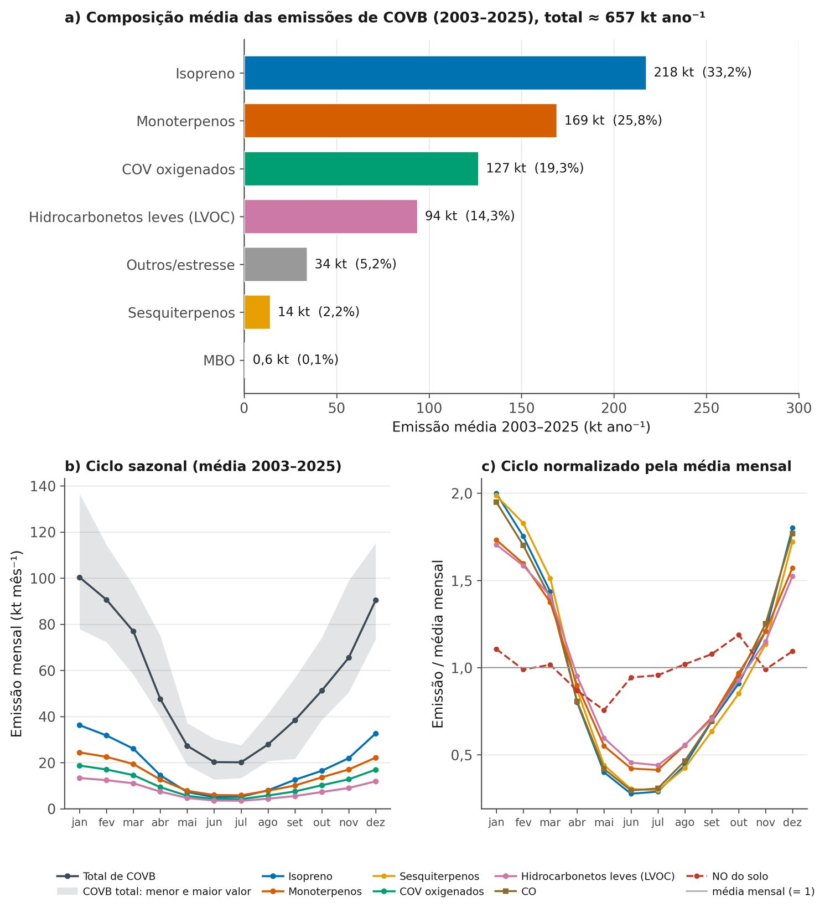
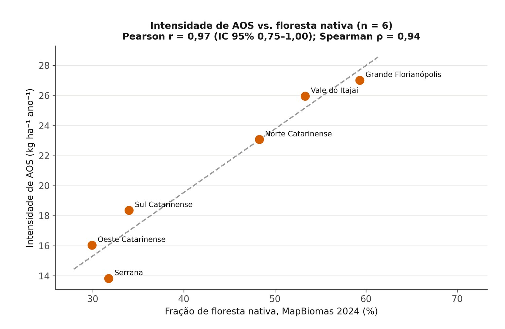
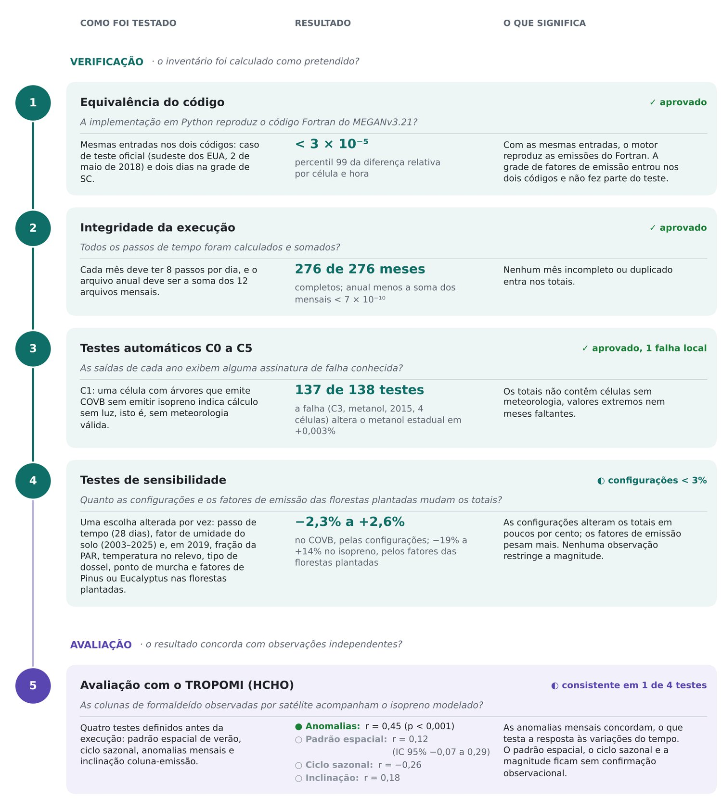

Repositório MEGAN_SCPrimeira versão públicaNovembro de 2026
MEGAN_SC da folha ao inventário
Tutorial ilustrado para entender o método do MEGAN, reproduzir o exemplo de Santa Catarina (2003 a 2025) e montar o inventário de emissões biogênicas de qualquer região e período
Endereço do código: https://github.com/jessicajcss/MEGAN_SC (o DOI do Zenodo será acrescentado depois do depósito)
Código sob a licença MIT; textos, tabelas e figuras sob CC-BY-4.0
Base científica: MEGANv3.21 (Guenther, 2024) e o modelo MEGAN (Guenther et al., 2006, 2012)
Antes de começar
Como usar este tutorial
Este material foi escrito para dois públicos ao mesmo tempo. Quem chega agora ao tema encontra explicações em linguagem simples, com exemplos e desenhos. Quem já trabalha com inventários de emissões encontra, nos quadros roxos, as equações, os arquivos e as funções do código.
Escolha uma trilha. Cada uma leva a um resultado concreto, e você pode parar no fim de qualquer capítulo sem perder o fio. Os 12 capítulos técnicos de docs/tutorial/ (em inglês) aprofundam cada parte com as equações e os arquivos de origem. Todo caminho, arquivo e comando citado aqui está no repositório.
🚀 Trilha rápida
leitura de cerca de 30 min Capítulos 1, 4 e 5. Você instala, recalcula os resultados do exemplo e confere as somas de verificação.
🔬 Trilha do método
leitura de cerca de 1,5 h Capítulos 2, 3, 9 e 11. Você entende como o modelo funciona, como ler os resultados e o que eles sustentam.
☁️ Trilha da nuvem
leitura de cerca de 1 h, mais horas de execução Capítulos 6 e 7. Você roda o modelo no Google Colab, com o Earth Engine.
🌎 Trilha da sua região
leitura de cerca de 1 h, mais a execução Capítulos 6, 7, 8 e 9. Você monta o inventário de outra região e período.
O que significa cada quadro
🎯 Neste capítulo: o que você vai aprender e quanto tempo leva
💡 Ideia-chave: o ponto que vale guardar
🗣️ Em palavras simples: a mesma ideia, sem jargão
🧠 Para especialistas: detalhe técnico e arquivo do código
⚠️ Atenção: erro comum, limite do método ou número em revisão
Os comandos supõem que o terminal está aberto na pasta principal do repositório, MEGAN_SC/. Quase todo erro de "arquivo não encontrado" vem de rodar o comando em outra pasta.
Capítulo 1
O inventário em uma página
🎯 Neste capítulo · 5 min
o que o repositório calcula e para quem serve;
por que as emissões biogênicas importam para o ozônio e o MP2,5;
os principais números do exemplo de Santa Catarina e a correção do IAF de 2024 e 2025 dele.
O MEGAN_SC estima quanto a vegetação e o solo de uma região lançam no ar de compostos orgânicos voláteis biogênicos (COVB), de NO do solo e de CO. O cálculo usa o código do MEGANv3.21 (Guenther, 2024b), reescrito em Python, com entradas lidas no Google Earth Engine, para qualquer região dada por um arquivo de contorno e qualquer período dado em meses. O repositório traz um exemplo completo: Santa Catarina, numa grade de 0,025° (cerca de 2,8 km) com 13.970 células dentro do Estado, a cada 3 horas, de 2003 a 2025. Os números dele ilustram este tutorial, e o capítulo 5 recalcula todos.
🗣️ Em palavras simples
Árvores, campos e lavouras soltam no ar gases leves, como o isopreno e os terpenos que dão o cheiro do pinheiro. O MEGAN estima quanto sai em cada pedacinho do mapa, hora a hora, a partir do tipo de vegetação, da quantidade de folhas, da temperatura e da luz.
Por que os COVB importam para a qualidade do ar
Na atmosfera, os COVB reagem com o radical OH, com o ozônio e com o radical nitrato (Atkinson; Arey, 2003). Na presença de óxidos de nitrogênio (NOx) e de luz solar, essas reações participam da formação de ozônio (Sillman, 1999). Parte dos produtos da oxidação condensa e forma aerossol orgânico secundário, um componente do material particulado fino (Hallquist et al., 2009; Carlton; Wiedinmyer; Kroll, 2009). Ozônio e MP2,5 têm valores-guia da Organização Mundial da Saúde (WHO, 2021).
O exemplo em números: Santa Catarina, 2003 a 2025
Os anos de 2024 e 2025 usam o IAF corrigido com o VIIRS (capítulo 3). Os quadros em âmbar são valores de 2025.
657 kt ano⁻¹emissão média de COVB no Estado
33,2%do total médio de COVB é isopreno; 25,8% são monoterpenos
183 kt ano⁻¹de precursores de AOS (monoterpenos e sesquiterpenos)
+0,88% ano⁻¹tendência do isopreno (Theil-Sen); NO do solo: −0,37% ano⁻¹
672,9 mil tde COVB em 2025, o último ano da série
228,6 mil tde isopreno em 2025
7,9%coeficiente de variação entre anos; picos em 2019 e 2024 (739 kt)
13.970células de 0,025° com centro dentro do Estado
O IAF (índice de área foliar) do MODIS ficou 12,1% abaixo da média de 2013 a 2023 em 2025, e o IAF do VIIRS ficou 1,8% abaixo no mesmo ano (caderno 16). A queda do MODIS foi tratada como defeito do registro recente desse sensor. A correção pela anomalia do VIIRS eleva o IAF médio do Estado em 5,0% (2024) e 11,6% (2025). O caderno 17 refez 2024 e 2025 com o IAF corrigido, e o caderno 19 instalou os dois anos na execução. Em 2025, o COVB total subiu 7,1% e o isopreno 4,3% (results/v10/notebook19/lai_sensitivity_table2_2024_2025.csv).
Os anos de 2003 a 2023 não mudaram. O primeiro cálculo de 2024 e 2025, com o IAF do MODIS, fica em data/run_v10_modis_lai_2024_2025/, e os resultados dele em results/v10_modis_lai_2024_2025/ (capítulos 3 e 10).
💡 Ideia-chave
O inventário mede emissão, ou seja, a massa que sai da vegetação e do solo. A concentração de ozônio ou de MP2,5 no ar depende também da química, do transporte e das outras fontes. Para chegar a ela, as emissões daqui entram como dado de um modelo de qualidade do ar.
Capítulo 2
O MEGANv3.21 em palavras simples
🎯 Neste capítulo · 20 min
a ideia de fator de emissão e de fatores de atividade;
como a copa das árvores entra na conta;
NO do solo, especiação e o fator ρ do isopreno;
os oito procedimentos FIX-1 a FIX-8 e um exemplo que roda no seu computador.
O MEGAN (Model of Emissions of Gases and Aerosols from Nature) parte de uma emissão de referência, válida em condições padrão, e a ajusta pelo que acontece em cada hora: luz, temperatura, quantidade de folhas, idade das folhas e água no solo (Guenther et al., 2006, 2012). O MEGAN_SC reproduz em Python o código Fortran do MEGANv3.21 (Guenther, 2024).
fluxo = EF × ER ER = IAF × γTP × γidade × γSM
No isopreno entra também o fator γCO2, e na classe do etanol e acetaldeído entra o fator de troca bidirecional γBD. Os fatores de estresse do Fortran valem 1 nas execuções deste repositório.
🗣️ Em palavras simples
Pense numa receita. O EF é a receita padrão de cada tipo de vegetação. Os fatores γ dizem se, naquela hora, está mais quente ou mais frio, se há mais ou menos luz, se as folhas são novas ou maduras e se falta água. Quanto mais folhas, maior a emissão, por isso o IAF multiplica tudo.
2.1 Luz e temperatura (γTP)
Cada classe de compostos tem uma parte ligada à luz, emitida assim que é produzida na folha, e uma parte guardada em reservatórios, que responde só à temperatura. A fração ligada à luz se chama LDF. No isopreno ela vale 1,0. Na classe dos pinenos (MT_PINE) vale 0,6 e no metanol, 0,8. A parte guardada cresce de forma exponencial com a temperatura da folha, exp[β(T − 303,15)], com β de 0,08 a 0,17 K⁻¹ conforme a classe.
2.2 A copa em camadas (MEGCAN)
O código transforma o tempo acima da copa (temperatura, radiação, vento, umidade e pressão do ERA5-Land) na luz e na temperatura de cada folha. A radiação fotossinteticamente ativa vale 0,45 vez a radiação de onda curta. As cinco camadas ficam em pontos de Gauss do IAF acumulado, e a soma usa os pesos do desenho.
2.3 Idade das folhas, água no solo e CO2
🍃 γidade
Folhas novas emitem pouco isopreno e muito monoterpeno e metanol. O MEGAN reparte a folhagem em nova, em crescimento, madura e velha pela variação do IAF entre o mês anterior e o atual. Com IAF estável, γidade do isopreno vale 0,95.
💧 γSM
Abaixo do ponto de murcha mais 0,04 m³ m⁻³, a emissão cai. O exemplo usou ponto de murcha constante de 0,12 m³ m⁻³, e a média mensal do Estado ficou entre 0,992 e 1,000 (teste S3).
🫧 γCO2
O MEGANv3.21 fixa o CO2 em 400 ppm, onde γCO2 = 1, e o caderno 10 mantém essa escolha. A mesma fórmula daria 1,025 a 376 ppm e 0,979 a 425 ppm (Heald et al., 2009, discutem essa resposta).
2.4 NO do solo e especiação
O NO do solo segue Yienger e Levy (1995), como codificado no MEGANv3.21, pelo caminho que usa só a temperatura do ar. Ao sul de 23° S, o código Fortran compara o dia do ano com constantes de mês e dia, o que torna a estação de cultivo degenerada. O MEGAN_SC usa a estação de novembro a maio e limita a zero o fator de fertilizante. Esse é um desvio documentado e intencional.
As 19 classes do MEGAN são divididas em 201 compostos, convertidas em massa e somadas de volta por classe. Os resultados agrupam as classes da seguinte forma.
Grupo
Classes do MEGAN
Isopreno
ISOP
Monoterpenos
MT_PINE, MT_ACYC, MT_CAMP, MT_SABI, MT_AROM
Sesquiterpenos
SQT_HR, SQT_LR
COV oxigenados
MEOH, ACTO, ETOH, ACID, OXPROD
COV leves; estresse e outros; MBO
LVOC; STRESS, OTHER; MBO
Fora dos COVB
NO (NO do solo) e CO
Os COVB somam as 17 classes que restam depois de separar NO e CO. Os precursores de AOS somam monoterpenos e sesquiterpenos.
🧠 Para especialistas · o fator ρ do isopreno
A equação do MEGAN tem um fator de perda e produção no dossel, ρ. Para o isopreno, Guenther et al. (2006) recomendaram o valor constante 0,96. O código MEGANv3.21 aplica ρ = 1. Os arquivos gravados pelo caderno 10 guardam o isopreno como o código calcula, e cada leitura de uma execução multiplica o isopreno por 0,96 (RHO_ISOP nos cadernos 11, 13, 14, 15 e 25; RHO em analysis/v10/common.py). Todos os números de results/v10 incluem o fator; a comparação com o BRAIN o deixa de fora nos dois lados.
2.5 Os oito procedimentos FIX-1 a FIX-8
O arquivo src/megan_sc/fixes.py reúne oito procedimentos que preparam as entradas e rodam o motor de modo fiel ao MEGANv3.21 e às convenções do ERA5-Land.
Id
O que faz
Por que é preciso
FIX-1
Célula sem meteorologia do ERA5-Land recebe todas as variáveis da célula válida mais próxima.
O ERA5-Land cobre só o continente. O valor de preenchimento viraria 340 K e luz zero no motor.
FIX-2
Médias diárias de temperatura e de luz calculadas com as 24 horas do dia.
O MEGANv3.21 usa médias diárias na resposta à temperatura e para reconhecer a noite.
FIX-3
O IAF do mês anterior entra como IAF do período anterior.
A idade das folhas depende da variação do IAF.
FIX-4
Célula vegetada sem IAF válido no mês recebe o IAF dos meses vizinhos.
IAF zero numa célula vegetada daria emissão zero.
FIX-5
Pixel sem dado do mapa de ecótipos recebe o ecótipo válido mais próximo.
Uma faixa costeira sem dado daria EF zero.
FIX-6
Fator de profundidade da copa aplicado só às folhas ao sol.
O megvea.f calcula desse modo.
FIX-7
Teto de 303 K na temperatura do ar antes dos dois ramos do NO do solo.
O soilnox.F calcula desse modo.
FIX-8
Radiação desacumulada hora a hora, exceto às 01 UTC.
O campo das 00 UTC guarda o total das 24 h anteriores (ECMWF, 2025).
💡 Ideia-chave · o carimbo do código
O SHA-256 do fixes.py começa por a933b29602929a82. Esse prefixo fica gravado em cada arquivo de emissão, e a verificação C0 do caderno 11 confere o carimbo. Cada saída aponta para o código exato que a produziu.
✅ Checkpoint · um exemplo que roda
Os fatores de atividade são funções de src/megan_sc/engine/gamma.py. Na pasta do repositório, com o ambiente instalado (capítulo 5), rode:
python - <<'EOF'
import sys; sys.path.insert(0, 'src')
from megan_sc.engine import gamma as g, species as sp
isop, pine, sqt = sp.index_of('ISOP'), sp.index_of('MT_PINE'), sp.index_of('SQT_HR')
print(g.gamtld(303.15, 297.0, isop)) # folha a 30 °C depois de um dia a 24 °C
print(g.gamp(1500.0, 400.0)) # luz forte, perto do platô
print(g.gamtli(340.0, pine), g.gamtli(340.0, sqt)) # o que aconteceria sem FIX-1
print(g.gamma_a(3.0, 3.0, 297.0, isop, 12)) # idade das folhas com IAF estável
print(g.gamma_co2(376.0), g.gamma_co2(425.0)) # CO2 (desligado no caderno 10)
EOF
Saída esperada, arredondada: 1.0543, 1.0160, 39.8 525.6, 0.95, 1.0250 0.9794. A terceira linha mostra por que o FIX-1 existe. Uma célula a 340 K e sem luz emitiria cerca de 40 vezes mais α-pineno e 526 vezes mais cariofileno do que deveria.
🧠 Para especialistas
As equações e as constantes estão transcritas do Fortran, com arquivo e linha, em docs/ALGORITHM_SPEC.md. O capítulo técnico 1 (docs/tutorial/01_science.md) segue a ordem em que cada valor é calculado. O motor está em src/megan_sc/engine/ (canopy.py, gamma.py, megvea.py, soil.py, daymet.py, speciation.py).
Capítulo 3
Os dados de entrada
🎯 Neste capítulo · 15 min
de onde vem cada entrada e como o modelo a usa;
a grade e a máscara, com o exemplo de Santa Catarina;
a conferência do IAF de 2024 e 2025 do exemplo com o VIIRS e a correção aplicada.
Entrada
Produto
Como o modelo usa
Meteorologia
ERA5-Land horário (Muñoz-Sabater et al., 2021), 0,1°
temperatura a 2 m, radiação de onda curta, vento a 10 m, pressão, umidade e água do solo; amostrado a cada 3 h
Índice de área foliar (IAF)
MODIS MCD15A3H versão 6.1 (Myneni; Knyazikhin; Park, 2021), 500 m, 4 dias
média mensal das recuperações de boa qualidade em cada célula; multiplica todas as classes e define a idade das folhas
IAF independente
VIIRS versão 2 do Suomi NPP (VNP15A2H; Myneni, 2023b), do NOAA-20 (VJ115A2H; Myneni, 2023a) e do NOAA-21 (VJ215A2H; Myneni, 2026), 500 m, 8 dias
conferência do IAF de 2013 a 2025 (caderno 16, Suomi NPP), correção de 2024 e 2025 (caderno 17) e conferência da correção com os outros dois satélites (caderno 22)
Cobertura da terra
MapBiomas Coleção 10 (Souza Junior et al., 2020), 30 m, anual, no Brasil; nos demais lugares, MODIS MCD12Q1 (Sulla-Menashe et al., 2019), 500 m
frações de árvore, arbusto, herbácea e cultivo; um ano fora do intervalo do produto usa o mais próximo (no exemplo, 2025 usa o mapa de 2024)
Fatores de emissão
arquivos de entrada do MEGAN 3.2: tabelas e mapa de ecótipos (Guenther, 2024a)
EF de cada classe por ecótipo e forma de crescimento; divisão em 201 compostos
Limites
o seu arquivo de contorno; no exemplo, IBGE, malha municipal 2024 (IBGE, 2025)
máscara da região e somas por zona (município, mesorregião)
HCHO (só avaliação)
TROPOMI L3 OFFL (De Smedt et al., 2018)
comparação com o isopreno modelado (caderno 14)
Todas as entradas, exceto as tabelas do MEGAN, são lidas pelo Google Earth Engine (Gorelick et al., 2017), nos módulos de src/megan_sc/gee/ e nos cadernos 10, 14, 16, 17, 20 e 21. A exceção é a conferência do caderno 22, que lê os arquivos do VIIRS no NASA Earthdata.
3.1 A grade e a máscara: o exemplo
📐 A grade
144 linhas × 224 colunas de 0,025°. Centros de 29,4875° S a 25,9125° S e de 53,8875° O a 48,3125° O. Dentro do Estado ficam 13.970 células (43,3% da caixa), com 95.969 km² de área de grade.
🗺️ A máscara
A célula pertence ao Estado quando o centro dela está dentro do polígono do IBGE. Os totais por município e por mesorregião repartem cada célula pela área que ela tem dentro de cada polígono.
⚠️ Atenção · a orientação das grades
Nos arquivos NetCDF e nos vetores NumPy, a linha 0 fica ao sul. Nos GeoTIFF, a linha 0 fica ao norte. Use numpy.flipud num campo GeoTIFF antes de combiná-lo com um campo NetCDF. Os programas de SIG leem os dois corretamente.

Uso e cobertura da terra do MapBiomas em 2024 (a) e fração de árvore na grade do modelo (b). Arquivo results/v10/figures/pt/fig_study_area.png, gerado por analysis/v10/maps/study_area_map.py.
3.2 Duas particularidades do ERA5-Land
Só continente. Células no litoral, em lagoas e em ilhas ficam sem dado em algumas variáveis. No exemplo, 190 células vegetadas do Estado (1.301 km²; 191 em 2021 e 2022) recebem a meteorologia da célula válida mais próxima (FIX-1).
Radiação acumulada. A radiação de onda curta é acumulada desde 00 UTC, e o campo das 00 UTC guarda as 24 h anteriores (ECMWF, 2025). O fluxo horário é a diferença entre horas consecutivas, exceto às 01 UTC (FIX-8).
3.3 O IAF de 2024 e 2025: conferência com o VIIRS
O caderno 16 comparou o IAF mensal do VIIRS, a bordo do Suomi NPP, com o IAF do MODIS usado na primeira execução do exemplo, na mesma grade, de 2013 a 2025. O VIIRS foi desenvolvido para dar continuidade ao registro do MODIS (Román et al., 2024). A comparação usou a média de 2013 a 2023 como referência e separou as células dominadas (fração ≥ 60%) por árvores, por herbáceas ou por cultivos. De 2013 a 2023, os desvios anuais dos dois sensores tiveram correlação de 0,84 a 0,91 nesses grupos e no Estado.
Desvio em relação a 2013-2023
MODIS 2024
VIIRS 2024
MODIS 2025
VIIRS 2025
Todas as células
−5,8%
−1,2%
−12,1%
−1,8%
Dominadas por árvores
−4,7%
−0,8%
−11,4%
−2,3%
Dominadas por herbáceas
−5,2%
+1,0%
−12,0%
−0,2%
Dominadas por cultivos
−5,2%
−0,2%
−8,7%
+1,9%
Fonte: results/v10/lai_viirs_check/lai_viirs_modis_summary.csv; correlações calculadas de lai_viirs_modis_annual.csv.

IAF mensal do Estado em relação à média do mês (a), desvio de 2025 por grupo (b) e fração de recuperações pelo algoritmo principal (c). Rótulos em inglês. Arquivo results/v10/lai_viirs_check/lai_viirs_modis.png, caderno 16.
A causa da queda do MODIS não foi estabelecida. As órbitas dos satélites Terra e Aqua derivam desde o fim da manutenção orbital, em 2020 e 2021 (NASA MODIS Land Team, 2025). A queda foi tratada como defeito do registro recente do MODIS.
A correção
IAF*(célula, ano, mês) = média MODIS 2013-2023 (célula, mês) × razão VIIRS (zona, ano, mês)
A razão VIIRS é o IAF do VIIRS no mês do ano corrigido dividido pela média de 2013 a 2023 do mesmo mês, numa de quatro zonas: células dominadas por árvores, por herbáceas, por cultivos e o restante do Estado. A forma da correção foi escolhida por um teste retrospectivo. Cada ano de 2013 a 2023 foi previsto a partir dos outros dez, e onze candidatas foram comparadas. A correção por zonas de forma de crescimento teve o menor erro quadrático médio, 0,362 m² m⁻², contra 0,386 m² m⁻² da média do MODIS sozinha. O IAF corrigido fica 5,0% (2024) e 11,6% (2025) acima do IAF do MODIS usado na primeira execução. O caderno 22 refez a correção com o VIIRS do NOAA-20 e do NOAA-21, com 2023 como referência. Em 2025, os três registros do VIIRS deram IAF estadual de fevereiro a dezembro de 3,24 a 3,31 m² m⁻², contra 3,22 m² m⁻² da correção publicada, que foi mantida (results/v10/lai_noaa20_check/).
Anomalia mensal do IAF de 2022 a 2025 (a), desvio anual de 2024 e 2025 por grupo (b) e teste retrospectivo das candidatas (c). Rótulos em inglês. Arquivo results/v10/lai_viirs_check/lai_correction.png, etapa laicorr do reproduce.py.
🧠 Para especialistas
Fórmula e escolhas em src/megan_sc/laicorr.py (DEFAULT = dict(method='zone', k=0, clip=None), zonas de growth_form_zones(), limiar de dominância 0,6).
Teste retrospectivo em analysis/v10/review/lai_viirs_correction.py; tabela em results/v10/lai_viirs_check/lai_correction_hindcast_2013_2023.csv; IAF corrigido em lai_viirs_corrected_2024_2025.npz.
O cache do caderno 16 guarda o IAF do VIIRS dividido por 10, porque a banda foi multiplicada por 0,1 quando ele foi gravado. Todo uso desses valores é uma razão, que não muda. O caderno distribuído lê a banda sem esse fator (data/README.md).
Capítulo 4
O repositório por dentro
🎯 Neste capítulo · 10 min
o que há em cada pasta;
três formas de uso: reproduzir o exemplo, rodar a sua região, refazer o exemplo;
onde ficam os dados grandes.
MEGAN_SC/
├── README.md, README.pt-BR.md # visão geral em inglês e em português
├── TUTORIAL_MEGAN_SC_pt.pdf, _en.pdf # este tutorial
├── REPRODUCE.md, DATA_AVAILABILITY.md, VALIDATION.md, CHANGELOG.md, CITATION.cff
├── reproduce.py # o exemplo recalculado num comando
├── config/ # configurações de execução (o exemplo; as suas)
├── src/megan_sc/ # motor, camada do Earth Engine, fixes.py, laicorr.py
├── notebooks/ # 10, 11, 25 para qualquer região; 12 a 23 do exemplo
├── analysis/v10/ # scripts do exemplo: estatísticas, mapas, diagnósticos
├── results/v10/ # tabelas, números e figuras do exemplo
├── results/MANIFEST.sha256 # SHA-256 de cada arquivo publicado
├── data/ # entradas pequenas; as grandes chegam pela versão publicada
├── tests/ # testes de unidade, execução sem rede de 10, 11 e 25
├── tools/ # executores de cadernos, comparação, dados, manifesto
├── benchmark/ # comparação com os executáveis Fortran
├── run_your_region/ # assistente para outra região
└── docs/ # ALGORITHM_SPEC.md e os 12 capítulos técnicos
4.1 Três formas de uso
Reproduzir o exemplo
Recalcula cada número, tabela e figura de Santa Catarina a partir da execução distribuída e compara com as cópias publicadas (capítulo 5).
Python 3.10 ou mais recente, cerca de 1,2 GB em disco, sem contas. Poucos minutos de cálculo.
Rodar a sua região
Monta o inventário de outro estado, província ou país, no período que você escolher (capítulos 6 a 9).
Conta Google com um projeto do Earth Engine, Colab e Drive, mais o contorno da região.
Refazer o exemplo
Roda de novo o modelo do exemplo a partir dos dados brutos, com as verificações, a comparação com o Fortran e a avaliação com o TROPOMI (capítulos 7 e 10).
Como na sua região. Horas de requisições por ano simulado; 41,2 EECU-horas no caderno do TROPOMI.
4.2 Dados no git e dados da versão publicada
As entradas pequenas ficam no repositório: limites do IBGE, tabelas do MEGAN, recorte do mapa de ecótipos e os arquivos de data/external/. Os dados grandes do exemplo são distribuídos em cinco arquivos zip, anexados à versão (release) v1.0.0 do repositório.
Arquivo zip
Pasta
Conteúdo
megan_sc_run_v10_2003-2025.zip (723 MB)
data/run_v10/
a execução de produção do caderno 10, 2003 a 2025, com 2024 e 2025 do caderno 17
tropomi_hcho_v10_2019-2025.zip (18 MB)
data/tropomi_hcho_v10/
84 campos mensais do TROPOMI na grade do modelo
megan_sc_s1_test_2019.zip (39 MB)
data/s1_test/
as duas execuções de teste do passo de tempo (teste S1)
lai_viirs_v10_2013-2025.zip (59 MB)
data/lai_viirs_v10/
IAF mensal do VIIRS e do MODIS, 2013 a 2025 (caderno 16)
megan_sc_run_v10_modis_lai_2024_2025.zip (63 MB)
data/run_v10_modis_lai_2024_2025/
2024 e 2025 calculados com o IAF do MODIS
O SHA-256 de cada arquivo de dados está em data/DATA_SHA256SUMS.txt (2.438 arquivos). As fontes, as licenças e os identificadores de cada item estão em DATA_AVAILABILITY.md.
⚠️ Atenção · de onde vêm os arquivos zip
O endereço https://github.com/jessicajcss/MEGAN_SC/releases/download/v1.0.0 guarda os cinco arquivos zip. Uma pasta local com os arquivos zip funciona do mesmo modo (capítulo 5). O DOI do Zenodo será acrescentado ao CITATION.cff depois do depósito.
🧠 Para especialistas · onde mora cada parte do código
src/megan_sc/engine/: o MEGANv3.21 em Python (copa, fatores de atividade, NO do solo, médias diárias, especiação).
src/megan_sc/gee/: leitura do ERA5-Land, do IAF, do MapBiomas, da cobertura MODIS e da textura do solo no Earth Engine.
src/megan_sc/fixes.py (FIX-1 a FIX-8) e src/megan_sc/laicorr.py (correção do IAF).
analysis/v10/_paths.py: as pastas usadas, que as variáveis de ambiente MEGAN_SC_* substituem.
notebooks/src/_setup_repo.py: o bloco que abre todos os cadernos, encontra o repositório e, no Colab, conecta o Drive.
Capítulo 5
Mão na massa: reproduzir o exemplo de Santa Catarina
🎯 Neste capítulo · 30 min de leitura, poucos minutos de cálculo
instalar o ambiente e rodar os testes;
conferir os arquivos publicados com o manifesto;
baixar os dados do exemplo e recalcular tudo com o reproduce.py.
🗣️ Em palavras simples
Reproduzir é refazer a conta com os mesmos dados e o mesmo código e chegar ao mesmo resultado. O repositório traz um inventário completo, Santa Catarina de 2003 a 2025, e qualquer pessoa pode conferir a cadeia inteira num notebook antes de rodar o modelo para outro lugar. O manifesto confere se você tem os arquivos certos. O reproduce.py confere se o código chega a eles.
1
Obter o repositório
git clone https://github.com/jessicajcss/MEGAN_SC.git MEGAN_SC && cd MEGAN_SC
# ou: Code > Download ZIP no GitHub, descompacte e renomeie MEGAN_SC-main para MEGAN_SC
2
Instalar o ambiente
pip install -r requirements-reproduce.txt # só a reprodução# ou o ambiente completo (Earth Engine, cadernos, mapas):
conda env create -f environment.yml && conda activate megan-sc
O requirements-lock.txt instala um conjunto de versões já testado (Python 3.10.12).
3
Rodar os testes de unidade
pytest -q # esperado: todos os testes passam
Os testes conferem a transcrição do Fortran, os procedimentos FIX-1 a FIX-8, o assistente de região e uma execução dos cadernos 10, 11 e 25 para uma região pequena, com o Earth Engine trocado por campos sintéticos. Eles não comparam o modelo com observações.
4
Conferir os resultados publicados
python tools/verify_manifest.py
337 files listed: OK 337, CHANGED 0, MISSING 0, EXTRA 0
O manifesto results/MANIFEST.sha256 lista o SHA-256 de cada arquivo de results/ e responde à pergunta "estes são os arquivos publicados?".
5
Baixar e conferir os dados
python tools/data_release.py fetch https://github.com/jessicajcss/MEGAN_SC/releases/download/v1.0.0
python reproduce.py check-data
2438 data files checked, 0 missing or different
Uma pasta com os cinco arquivos zip também serve no lugar do endereço. Antes do download, o check-data aponta 2.416 arquivos ausentes e confere os 22 arquivos de dados que vêm com o git.
6
Recalcular tudo
python reproduce.py list # as etapas e o que cada uma grava
python reproduce.py all # tudo, e no fim a comparação com results/v10
python reproduce.py nb13 maps # ou qualquer subconjunto, na ordem dada
✅ Ponto de verificação · o que esperar
Em 16 de novembro de 2026, numa máquina Linux com as versões de requirements-lock.txt, as 16 etapas levaram 3 min 34 s. Todos os arquivos CSV coincidiram com a cópia publicada (54 de 59 byte a byte, 5 dentro de uma tolerância relativa de 10−6), e 34 dos 46 arquivos PNG ficaram idênticos pixel a pixel. As outras figuras mudam em poucos pixels ou na posição dos painéis, que o matplotlib define pelo tamanho do texto.
O registro completo, arquivo por arquivo, está em docs/tutorial/reproduction_log.txt.
5.1 As etapas
Etapa
O que recalcula
integrity
oito passos por dia em todos os meses; arquivo anual igual à soma dos mensais
nb11
caderno 11: verificações C0 a C5 de cada ano
nb13
caderno 13: totais por classe e por grupo, tendências, correlações, ciclo sazonal, mesorregiões, municípios, key_numbers.csv e figuras
nb14, nb14diag
caderno 14 a partir do cache do TROPOMI (sem Earth Engine) e os diagnósticos posteriores
nb15, s1
testes S3 (umidade do solo) e S1 (passo de tempo)
c3
a falha de C3 em 2015 em detalhe e o efeito dela nos totais
report, maps
estatísticas por classe, mesorregião e município; todos os mapas
meso2024, final, extra
cobertura da terra de 2024 nas mesorregiões, diagnósticos adicionais, mapa da área de estudo e fluxograma
posthoc, laicorr
diagnósticos post hoc (silvicultura, IAF por forma de crescimento); conferência e correção do IAF de 2024 e 2025
compare
cada arquivo recalculado contra a cópia publicada
Tudo é gravado em reproduced/ (ou em $MEGAN_SC_OUT), com um registro por etapa em reproduced/logs/. As pastas data/ e results/ ficam intactas.
⚠️ Atenção · figuras e fontes
Os arquivos PNG dependem das fontes e das versões das bibliotecas. Em outra máquina, algumas figuras podem diferir em poucos pixels ou na posição dos painéis, sem mudança nos números. Quem roda o caderno 13 duas vezes na mesma pasta faz a segunda execução ler um cache de precisão simples, e a comparação passa a mostrar alguns arquivos como iguais dentro da tolerância.
Capítulo 6
Google Drive, Colab e Earth Engine
🎯 Neste capítulo · cerca de 1 h de preparação
registrar um projeto do Google Cloud no Earth Engine;
levar o repositório ao Google Drive e abrir os cadernos no Colab;
usar o Earth Engine no seu computador ou num servidor.
O Google Colab roda cadernos Jupyter numa máquina do Google, pelo navegador. O Google Earth Engine guarda e processa os dados de satélite e de reanálise (Gorelick et al., 2017). O caderno roda no Colab, pede ao Earth Engine as contas sobre os mapas e grava os resultados no Google Drive.
6.1 Registrar o projeto no Earth Engine (uma vez)
O Earth Engine funciona dentro de um projeto do Google Cloud registrado para ele, tanto no uso gratuito quanto no pago. Os projetos padrão do Cloud e do Colab não vêm com o Earth Engine habilitado (GOOGLE, 2026a).
1
Abra a página de registro
Entre em console.cloud.google.com/earth-engine com a sua conta Google. A página cria um projeto novo ou registra um que você já tem, e o registro libera o acesso na hora (GOOGLE, 2025).
2
Escolha o uso não comercial
Preencha o questionário de elegibilidade para uso não comercial (console.cloud.google.com/earth-engine/configuration). Projetos não comerciais dispensam configuração de cobrança (GOOGLE, 2025).
3
Habilite a API
Na página da Earth Engine API do Cloud Console, com o seu projeto selecionado, clique em Ativar se o botão aparecer (GOOGLE, 2025).
4
Anote o ID do projeto
O ID aparece no seletor de projetos do console, por exemplo meu-projeto-ee. Ele vai em EE_PROJECT nas configurações de um caderno ou em earth_engine.project de uma configuração de execução (capítulo 7). O valor provisório your-ee-project faz o caderno parar com uma mensagem até ser trocado.
⚠️ Atenção
Projetos registrados antes de 15 de abril de 2025 precisam confirmar a elegibilidade não comercial para manter o acesso, e todo projeto não comercial passa por nova confirmação periódica (GOOGLE, 2025).
Contas institucionais às vezes bloqueiam a criação de projetos. Peça ao administrador, ou crie o projeto com uma conta pessoal e inclua a conta de trabalho como proprietária (GOOGLE, 2026a).
Projetos não comerciais usam por padrão o nível Community, com 150 EECU-horas por mês. Acima disso, o projeto entra num modo restrito, com menos tarefas simultâneas (GOOGLE, 2026b). O caderno 14 usou 41,2 EECU-horas.
6.2 Levar o repositório ao Google Drive
Todos os cadernos começam pelo mesmo bloco. No Colab, ele conecta o Drive e procura o repositório em MyDrive/MEGAN_SC (também megan_sc, megan-sc ou uma pasta MEGAN_SC um nível abaixo de MyDrive). As saídas vão para MyDrive.
Opção 1 · enviar a pasta
No GitHub, Code › Download ZIP. Descompacte no seu computador, renomeie MEGAN_SC-main para MEGAN_SC e, no Google Drive, use Novo › Upload de pasta para enviar a pasta a Meu Drive.
Opção 2 · clonar pelo Colab
Num caderno novo do Colab, rode:
from google.colab import drive
drive.mount('/content/drive')
!git clone https://github.com/jessicajcss/MEGAN_SC.git \
/content/drive/MyDrive/MEGAN_SC
O caderno 10 e o assistente de região não precisam de mais nada, porque as tabelas do MEGAN, o mapa de ecótipos e os limites vêm com o git. Os cadernos que leem a execução distribuída do exemplo (11, 13, 14 a partir do cache, 15 e 25) precisam também dos cinco arquivos zip da versão publicada dentro de MyDrive/MEGAN_SC. No Colab, rode %cd /content/drive/MyDrive/MEGAN_SC e depois os comandos do passo 5 do capítulo 5, cada um precedido de !.
6.3 Abrir, configurar e rodar um caderno
1
Abra o caderno
No Drive, clique duas vezes em MEGAN_SC/notebooks/10_production_run.ipynb e escolha Google Colaboratory (na primeira vez, Conectar mais apps › Colaboratory). O endereço colab.research.google.com/github/jessicajcss/MEGAN_SC/blob/main/notebooks/<caderno>.ipynb também abre cada caderno e continua precisando do repositório no Drive.
2
Preencha a célula de configurações
Nos cadernos 10, 11 e 25: RUN_CONFIG (a configuração da execução) e, no caderno 10, EE_PROJECT. Nos demais cadernos do exemplo que usam o Earth Engine, o EE_PROJECT fica na célula "3 · Earth Engine" (17 e 20), na "2 · Earth Engine" (21) ou na célula de configurações (14 e 16).
3
Rode tudo
Use Ambiente de execução › Executar tudo. A API do Earth Engine já vem instalada no Colab (GOOGLE, 2024). No Colab, ee.Authenticate() usa o modo colab e as credenciais do próprio Colab, e ee.Initialize(project=EE_PROJECT) liga a sessão ao seu projeto (GOOGLE, 2026a). Uma falha na conexão do Drive interrompe o caderno de propósito.
4
Acompanhe e retome
Um ano de execução do modelo leva horas de requisições. A autenticação precisa ser refeita a cada sessão nova, depois de reiniciar o kernel ou quando a máquina é reciclada por inatividade (GOOGLE, 2024). O caderno 10 retoma do último ponto salvo quando você roda todas as células de novo.
6.4 Earth Engine no seu computador ou num servidor
💻 Seu computador
Instale o earthengine-api (já incluído no environment.yml) e entre uma vez:
As credenciais ficam em ~/.config/earthengine/credentials (GOOGLE, 2026a). Abra os cadernos de notebooks/ no Jupyter a partir do repositório: o bloco inicial o encontra, e as saídas ficam ao lado dele. Numa máquina remota sem navegador, use auth_mode='notebook'.
🖥️ Um servidor
Crie uma conta de serviço no mesmo projeto, com uma chave JSON guardada fora do repositório. Dê a ela os papéis Earth Engine Resource Writer (cálculos interativos e tarefas de exportação) e Service Usage Consumer, pois sem a permissão serviceusage.services.use o ee.Initialize falha (GOOGLE, 2026c). Depois escreva service_account_key: /caminho/chave.json em earth_engine na configuração da execução.
🗣️ Em palavras simples
O Colab é o computador emprestado. O Earth Engine é a biblioteca de mapas de satélite. O Drive é a gaveta onde os resultados ficam quando o computador emprestado é desligado.
Capítulo 7
Rodar o modelo: cadernos 10, 11 e 25
🎯 Neste capítulo · 20 min de leitura, horas de execução
o que uma configuração de execução contém;
como o caderno 10 calcula um inventário, mês a mês;
como os cadernos 11 e 25 o verificam e o transformam em resultados.
Três cadernos servem ao exemplo de Santa Catarina e a qualquer outra região e período. Uma execução é definida por um arquivo de configuração, e config/santa_catarina_2003_2025.yaml é a configuração do exemplo.
7.1 A configuração da execução
Bloco
Exemplo de Santa Catarina
Significado
period
2003-01 a 2025-12, sample_hours: 3
primeiro e último mês (UTC); ERA5-Land lido a cada 3 h
domain
bbox, 0,025°
grade sobre uma caixa ou sobre o arquivo de limites
region
sc_state_ibge.gpkg; zonas: municípios
a célula conta quando o centro dela fica dentro
datasets.vegetation
MapBiomas, coleção 10, 1985-2024, tipo de copa 3
mapbiomas (Brasil) ou modis (qualquer país); um ano fora do intervalo usa o mais próximo
datasets.soil, emission_factors
ponto de murcha 0,12; tabelas e recorte de ecótipos do MEGAN 3.2
fator de umidade do solo; fatores de emissão
earth_engine, output
your-ee-project; megan_sc_outputs_v10
ID do projeto; pasta e etiqueta das saídas
7.2 Caderno 10: a execução do modelo
Configurações: RUN_CONFIG, EE_PROJECT, OUT_BASE (MyDrive no Colab) e, se quiser, YEARS, MONTHS e TEST_DAYS (os primeiros dias de cada mês, para uma prévia). Para cada mês, o caderno amostra no Earth Engine, na grade do modelo, o ERA5-Land a cada 3 h, o IAF do MODIS e a cobertura da terra, roda o motor com FIX-1 a FIX-8 e grava, para cada ano, as grades de emissão mensais e anuais (toneladas por célula), as entradas como o modelo as viu, um registro de cada procedimento, as estatísticas mensais e o provenance_v10.json.
✅ Ponto de verificação · fim do caderno 10
A autoverificação final deve mostrar signature_cells = 0 (nenhuma célula florestada sem isopreno) e 12 registros de procedimentos por ano completo. Depois de uma desconexão, rode todas as células de novo: os meses prontos são pulados, e o mês corrente retoma do ponto salvo.
⚠️ Atenção · refazer o exemplo
A configuração fixa a Coleção 10 do MapBiomas, e o caderno grava no provenance_v10.json o identificador da coleção que leu. Para reusar exatamente a cobertura da execução distribuída, copie antes data/run_v10/<ano>/inputs/growthform_*.npz para a pasta de saída (capítulo técnico 6, seção 6.3). Os anos de 2024 e 2025 distribuídos usam um IAF corrigido com o VIIRS (capítulo 3), e uma nova execução desses anos se compara com results/v10_modis_lai_2024_2025.
7.3 Caderno 11: as verificações
Com o mesmo RUN_CONFIG, seis verificações por ano: C0 procedência (mesmo hash do fixes.py e mesmas correções do motor), C1 células florestadas sem isopreno, C2 células atípicas, C3 coerência das células preenchidas pelo FIX-1 com as vizinhas, C4 completude, C5 PAR médio mensal da região entre 20 e 200 W m⁻². No exemplo, 137 de 138 resultados passaram. A falha, C3 em 2015 para o metanol, está explicada em results/v10/diagnostics/c3/.
7.4 Caderno 25: os resultados de qualquer execução
Com o mesmo RUN_CONFIG, ele grava em <execução>/results/ os totais mensais e anuais por classe e por grupo, o ciclo sazonal, mapas da intensidade média (kg ha⁻¹ ano⁻¹, em GeoTIFF e em figura), as variáveis de controle anuais como o modelo as viu, as correlações brutas e sem tendência, as tendências e os totais de cada zona. Tendências e correlações exigem pelo menos 10 anos completos. O capítulo 9 explica como ler cada arquivo. No exemplo, o caderno 13 acrescenta o que depende dos limites de Santa Catarina e do inventário estadual anterior.
Capítulo 8
O inventário da sua região
🎯 Neste capítulo · 20 min de leitura, horas de execução
o assistente de run_your_region/, sem programação;
a execução completa com os cadernos 10, 11 e 25;
as escolhas a revisar em outra região.
O motor funciona para qualquer região continental do mundo. A grade, as entradas e a máscara saem de um arquivo de contorno e de um período. O guia run_your_region/START_HERE.md explica tudo passo a passo, inclusive onde achar arquivos de contorno gratuitos, e o caderno run_your_region/region_setup.ipynb roda no Colab.
8.1 O assistente
1
Preencha o passo 1
REGION_NAME (um apelido curto), SHAPEFILE_PATH (contorno no Drive, por exemplo em MyDrive/MEGAN_SC/data/regions/), COUNTRY_IS_BRAZIL, o primeiro e o último mês (START_YEAR, START_MONTH, END_YEAR, END_MONTH), EE_PROJECT e RESOLUTION_DEG (0,05° é o valor sugerido). Fora do recorte de Santa Catarina, também GLOBAL_ECOTYPE_PATH, o mapa global de ecótipos EVT3d.nc dos arquivos de entrada do MEGAN 3.2 (GUENTHER, 2024a).
2
Rode tudo e confira
O assistente monta a grade e a máscara, confere se o ERA5-Land e o IAF do MODIS cobrem o período, lê a cobertura da terra (MapBiomas no Brasil, MODIS MCD12Q1 nos demais lugares; SULLA-MENASHE et al., 2019), escolhe o mapa de ecótipos e preenche as falhas dele (FIX-5), monta os EF, roda um teste de dois dias com o motor do caderno 10 num mês quente e desenha um mapa de isopreno.
3
Salve e rode o período
O passo 8 grava config/<região>_run.yaml, e o passo 9 mostra o valor de RUN_CONFIG. Depois rode os cadernos 10, 11 e 25 com ele (capítulo 7). Comece com um mês e resolução grosseira, depois um ano, depois o período inteiro.
8.2 Escolhas a revisar em outra região
Escolha
Em Santa Catarina
O que conferir
Tipo de copa das árvores
folhosa temperada (tipo 3)
o assistente usa folhosa tropical (tipo 2) a menos de 23,5° do equador
Cobertura da terra
MapBiomas, 30 m
MODIS MCD12Q1, 500 m, fora do Brasil: bordas de floresta e mosaicos mais grosseiros
Anos da cobertura
2025 usa 2024
MapBiomas 1985-2024 e MCD12Q1 2001-2024 no Earth Engine
Ponto de murcha
constante, 0,12 m³ m⁻³
derivá-lo da textura do solo onde o solo seca
Estação do NO do solo
novembro a maio
se a estação combina com a agricultura local
Fator ρ do isopreno
0,96 aplicado na leitura
dizer qual convenção os seus números seguem
Litoral e ilhas
FIX-1 preenche pela célula mais próxima
filled_met_steps nos registros mensais
Resolução
0,025°
o ERA5-Land tem 0,1°; uma grade mais fina só acrescenta detalhe de cobertura
Período
2003 a 2025
o IAF do MODIS começa em julho de 2002; os últimos meses chegam ao Earth Engine com atraso
💡 O que relatar
Relate o arquivo de configuração, o hash do fixes.py, as escolhas acima, as verificações do caderno 11 e os limites que valem para a sua região (capítulo 11). Enquanto não houver comparação com observações, apresente o inventário como estimativa de modelo.
Capítulo 9
Ler os resultados
🎯 Neste capítulo · 25 min
unidades e convenções de cada resultado;
o que move os totais, o ciclo sazonal e os mapas;
como ler correlações e tendências de um inventário de modelo e como o exemplo foi verificado.
9.1 Unidades e convenções
Massa dos compostos. As toneladas são a massa dos compostos de cada classe, não a de carbono. Converta antes de comparar com um inventário dado em carbono ou em mols.
Isopreno com ρ = 0,96, aplicado na leitura da execução; os arquivos do caderno 10 guardam o isopreno sem ele (capítulo 2).
Região. A célula conta quando o centro dela fica dentro do contorno. As intensidades dividem pela área da célula (kg ha⁻¹ ano⁻¹).
Tempo. Meses e anos são meses e anos do calendário em UTC, a hora do ERA5-Land.
9.2 Totais e ciclo sazonal
O nível de um total depende sobretudo dos fatores de emissão e da área de vegetação, e a variação dele, dos fatores de atividade. A parte de cada classe que não depende da luz cresce exponencialmente com a temperatura da folha, e a parte que depende da luz responde à temperatura e à luz (capítulo 2). Os totais mensais acompanham os ciclos de temperatura, luz e área foliar. No exemplo, os COVB somaram em média 657 kt ano⁻¹, com máximo em janeiro (100 kt mês⁻¹ em média) e mínimo em junho e julho (cerca de 20 kt mês⁻¹).

Emissões anuais do Estado, 2003 a 2025: COVB (a), isopreno (b), monoterpenos (c), sesquiterpenos (d) e NO do solo (e). Os anos de 2024 e 2025 usam o IAF corrigido com o VIIRS. Arquivo results/v10/figures/pt/fig1.png, caderno 13.

Composição média dos COVB (a), ciclo sazonal (b) e ciclo normalizado pela média mensal (c), 2003 a 2025. Arquivo results/v10/figures/pt/fig2.png, caderno 13.
⚠️ Atenção · comparar inventários
Confira a definição das espécies, a convenção de massa, o ρ, a área, o ano, a cobertura da terra, os fatores de emissão e o esquema do NO do solo. Em 2019, o isopreno, o CO e o NO do solo do exemplo foram 7,6, 3,7 e 18,9 vezes os do inventário estadual anterior (HOINASKI et al., 2022). Uma razão mostra que dois inventários diferem e não indica qual deles está certo.
9.3 Mapas e regiões
O mapa de intensidade segue primeiro o fator de emissão de cada célula, que pondera os fatores do ecótipo pelas frações de árvore, arbusto, herbácea e cultivo. A área foliar e a temperatura modulam esse padrão. Totais por unidade favorecem as unidades grandes, e a comparação entre unidades deve usar a intensidade. No exemplo, a intensidade de precursores de AOS das seis mesorregiões acompanha a fração de floresta nativa (MapBiomas 2024): r de Pearson = 0,97 (intervalo de 95% de 0,75 a 0,997) e ρ de Spearman = 0,94 (p exato = 0,017). Com seis unidades, o resultado descreve as seis mesorregiões.

Intensidade de precursores de AOS contra a fração de floresta nativa das seis mesorregiões (MapBiomas 2024). Arquivo results/v10/notebook13_meso2024/figures/pt/fig6.png, caderno 13.
9.4 Variáveis de controle e correlações
As variáveis de controle são as entradas como o modelo as leu, e não observações independentes. Uma correlação entre uma série de emissão e uma variável mostra qual entrada moveu as emissões do modelo e serve de diagnóstico do modelo. Retire antes a tendência das duas séries, para que tendências comuns não criem correlação: no exemplo, NO do solo e temperatura têm r = 0,30 nas séries brutas e 0,82 sem tendência. As variáveis variam juntas (PAR e água do solo: r = −0,90), e os efeitos separados delas ficam instáveis.
9.5 Tendências
Theil-Sen (SEN, 1968): a inclinação é a mediana das inclinações entre todos os pares de anos, dada em % da média por ano.
Mann-Kendall (MANN, 1945; KENDALL, 1975): testa a ausência de tendência monotônica; a correção de Hamed e Rao (1998) leva em conta a autocorrelação.
Benjamini-Hochberg (BENJAMINI; HOCHBERG, 1995): várias tendências testadas juntas pedem o controle da taxa de falsas descobertas. No exemplo, seis das nove tendências permanecem (q = 0,017 a 0,023), entre elas a do isopreno (+0,88% ano⁻¹).
⚠️ Atenção · tendências de um inventário de modelo
Uma tendência é a tendência das entradas vista pelo modelo: temperatura, área foliar e cobertura da terra. Uma troca de sensor, uma deriva de órbita ou uma nova coleção de cobertura podem criar tendência sem mudança da vegetação. No exemplo, as séries de 2003 a 2025 terminam nos dois anos com IAF corrigido, e de 2003 a 2023 as mesmas seis tendências permanecem (q ≤ 0,048).
9.6 Como o exemplo foi verificado
🧩 Contra o código oficial
Com o motor como usado na produção, a atividade de emissão difere do Fortran em no máximo 3,8 × 10⁻⁶ (relativo) no caso de teste do código, quando os dois usam a copa do Fortran (VALIDATION.md).
🔎 A própria execução
Seis verificações por ano, 138 resultados, 137 aprovados. Cada um dos 276 meses tem oito passos por dia, e cada arquivo anual é a soma dos mensais.
🛰️ Contra observações
As anomalias mensais sem sazonalidade do HCHO do TROPOMI acompanham o isopreno modelado (r = 0,45; Nef = 72; p < 0,001). O padrão espacial e o ciclo sazonal não foram reproduzidos. A coluna observada ficou entre 45% e 125% da esperada, faixa que inclui 100%.
⚙️ Sensibilidade
Passo de 3 h contra 1 h: −0,06% nos COVB em 28 dias de 2019 (teste S1). Fator de umidade do solo: cerca de −0,05% nos COVB (teste S3).

Fluxograma de verificação. Arquivo results/v10/figures/pt/fig_verification.png, gerado por analysis/v10/schematics/verification_flowchart.py.Capítulo 10
Os cadernos do exemplo, do 12 ao 23
🎯 Neste capítulo · 20 min
o que cada caderno do exemplo de Santa Catarina faz, exige e grava;
a observação sobre a área nominal das células do BRAIN.
Estes cadernos avaliam e testam a execução do exemplo. Rodaram no Google Colab entre outubro e 8 de novembro de 2026, e as saídas publicadas estão em results/v10/. Cada caderno é gerado a partir de uma fonte em formato percent em notebooks/src/, e o .py e o .ipynb guardam o mesmo código. O notebooks/README.md tem uma linha por caderno.
12 · Comparação com os executáveis Fortran executado (Colab)
Roda os binários oficiais do MEGANv3.21 e o motor em Python com as mesmas entradas e compara etapa por etapa. Com os procedimentos do fixes.py, como na produção, todas as etapas passam. Precisa do MEGANv3.21.tar.gz (GUENTHER, 2024b) e de Linux x86-64, e leva de 15 a 25 min. Os resultados estão em benchmark/results_colab/ e no VALIDATION.md.
13 · Tabelas, números e figuras de Santa Catarina executado
Totais por classe e por grupo, tendências, correlações, ciclo sazonal, as seis mesorregiões, os 295 municípios, a comparação de 2019 com o inventário estadual anterior, o key_numbers.csv e as figuras em português e em inglês.
14 · Avaliação com o formaldeído do TROPOMI executado
Exporta do Earth Engine, mês a mês, o HCHO filtrado na grade do modelo e aplica quatro testes fixados antes da comparação. Usou 41,2 EECU-horas e cerca de 6 h para os 84 meses. Com o cache de data/tropomi_hcho_v10/, roda sem o Earth Engine.
15 · Testes de sensibilidade S1 e S3 executados; S2 previsto
O S1 compara o passo de 3 h com o de 1 h em 28 dias de 2019. O S3 mede o efeito do fator de umidade do solo a partir dos registros da execução. O S2, sobre a agregação do IAF, foi previsto e não rodou.
16 · Conferência do IAF com o VIIRS executado em 31/10/2026
Compara o IAF mensal do VIIRS (NASA/VIIRS/002/VNP15A2H) com o IAF do MODIS da execução, na grade do inventário, de 2013 a 2025, em 312 requisições ao Earth Engine (capítulo 3).
17 · Nova execução de 2024 e 2025 com o IAF corrigido executado
É o caderno 10 para 2024 e 2025 com o IAF corrigido por laicorr.corrected_run_lai. A célula 11 confere que só o IAF muda, e a célula 12 instala os anos corrigidos apenas com INSTALL = True. Em 2025, os COVB totais subiram 7,1%, o isopreno 4,3% e os monoterpenos 7,9%, e o NO do solo caiu 0,2% (results/v10/notebook19/lai_sensitivity_table2_2024_2025.csv).
18 · Comparação com o BRAIN 2019 executado
Compara as emissões de 2019 com as emissões do MEGAN no BRAIN, domínio d02 de 4 km (HOINASKI; WILL; RIBEIRO, 2024), com a mesma região, as mesmas espécies, as mesmas unidades e o mesmo período. Nas áreas verdadeiras das células, o isopreno de 2019 do exemplo foi 0,79 vez o do BRAIN, e a soma das classes de COV, 0,87 vez. Não usa o Earth Engine.
🧠 Para especialistas · a área nominal das células do BRAIN
O MGN2MECH do MEGANv3.21 transforma fluxos (nmol m⁻² s⁻¹) em taxas por célula com garea = xcell3d * ycell3d, a área nominal de 16 km². Na grade Mercator do BRAIN, verdadeira no equador, a área real de uma célula é cerca de 16 cos²φ km², de 12,2 a 12,9 km² sobre Santa Catarina. O caderno informa os totais do Estado das duas formas. Com as taxas como entregues, eles ficaram 1,26 a 1,27 vez os das áreas verdadeiras, e a comparação usa as áreas verdadeiras.
19 · Instalação e reprodução executado uma vez
Conferiu a execução do 17, instalou os anos corrigidos e moveu os anos do MODIS para megan_sc_outputs_v10_modis_lai_2024_2025/, baixou o arquivo oficial de CO2 da NOAA e rodou o reproduce.py com os dois IAF. Partiu de pastas que não são distribuídas, e o reproduce.py repete as comparações dele.
20 e 21 · Sensibilidade de 2019 às entradas; ERA5-Land contra o INMET executados
O 20 refaz 2019 mudando uma entrada por vez (temperatura ajustada ao relevo, PAR como 50% da onda curta, copa tropical, silvicultura como acicular, ponto de murcha de argila). O 21 compara o ERA5-Land com as estações do INMET e ajusta o gradiente térmico vertical que o 20 lê, e roda antes dele.
22 e 23 · VIIRS do NOAA-20 e do NOAA-21; diferenças em relação ao BRAIN executados
O 22 recalcula o IAF corrigido de 2024 e 2025 a partir do VIIRS de três satélites (conta Earthdata; a célula 2 mostra o nome de usuário, apague a saída antes de compartilhar). O 23 testa as explicações das diferenças em relação ao BRAIN com os dados disponíveis.
Capítulo 11
Limitações
🎯 Neste capítulo · 10 min
o que os resultados sustentam e o que deixam em aberto;
as escolhas de método que pesam nos números.
📏 Faltam medições locais
Cada classe escala com o fator de emissão, tirado das tabelas do MEGAN. O repositório confere o código e a execução, e não os fatores de emissão. Fluxos ou concentrações medidos na região testariam a magnitude (VALIDATION.md).
🛰️ O TROPOMI sustenta só uma parte
No exemplo, a comparação sustenta as anomalias temporais do isopreno modelado. O padrão espacial observado segue o relevo, e a faixa de tempos de vida, rendimentos e correções de viés deixa a magnitude em aberto (PALMER et al., 2003; VIGOUROUX et al., 2020).
🍃 IAF de 2024 e 2025
O IAF do MODIS desses dois anos foi trocado por uma correção que depende do registro do VIIRS do Suomi NPP. O NOAA-20 e o NOAA-21 usam o mesmo algoritmo e não testam o método de recuperação (capítulos 3 e 10).
🌲 Silvicultura como árvore
Pinus e eucalipto entram como árvore, sem separação. Com os fatores de emissão de pinus ou de eucalipto na área de silvicultura de 2019, o isopreno de 2019 mudaria −18,7% ou +13,7% (results/v10/posthoc_review/).
🫧 CO2 desligado
Com a inibição pelo CO2 (375 a 426 ppm), a tendência do isopreno do exemplo seria +0,65% ao ano (p = 0,018; q = 0,03), contra +0,88% sem ela (HEALD et al., 2009; LAN; TANS; THONING, 2026).
🗺️ Cobertura e solo
O MapBiomas termina em 2024, e 2025 usa o mapa de 2024. O ponto de murcha é constante (0,12 m³ m⁻³), e o fator de umidade do solo muda os COVB em cerca de −0,05%.
⏱️ Uma única execução
O exemplo foi calculado uma vez. O repositório não tem uma dispersão medida entre duas execuções completas, e um reprocessamento de uma coleção de entrada pelo produtor pode mudar uma execução nova.
📚 Comparar inventários
Inventários com versões e entradas diferentes não isolam uma causa única da diferença entre eles (capítulo 9).
💡 Para guardar
Reproduzir prova que o código chega aos números publicados. Interpretar bem exige ter estas premissas em vista, junto com a diferença entre emissão e concentração e com a incerteza dos fatores de emissão e da vegetação.
leia a primeira coluna diferente; confira check-data e reproduce.py paths
No space left on device
as saídas ocupam cerca de 160 MB, mais cópias do cache
aponte MEGAN_SC_OUT para um disco com espaço
12.2 Cadernos, Colab e Earth Engine
O que aparece
Por quê
O que fazer
The MEGAN_SC folder was not found
nenhuma pasta com src/megan_sc/fixes.py onde o bloco inicial procura
coloque o repositório em MyDrive/MEGAN_SC (capítulo 6)
Earth Engine needs the id of a Google Cloud project
EE_PROJECT vazio ou ainda your-ee-project
escreva o ID do seu projeto (capítulo 6)
Earth Engine API has not been used in project ... or it is disabled
projeto sem a API habilitada
habilite a API no projeto (GOOGLE, 2026a)
region boundary not found
caminho errado na configuração
caminhos do repositório são relativos a ele; arquivos no Drive precisam de /content/drive/MyDrive/...
linhas EE retry ... no caderno 10
erros passageiros; cada requisição tem quatro tentativas
deixe seguir; depois de quatro falhas, rode todas as células de novo
o caderno 11 não acha anos, ou o 25 não acha arquivos
RUN_CONFIG ou OUT_BASE diferentes, ou só arquivos de teste
use as configurações da execução do caderno 10
caderno 12: libiomp5.so not found
falta a biblioteca OpenMP da Intel
a célula 2 a instala; rode em Linux x86-64 (Colab)
✅ Pedir ajuda
Abra uma issue no repositório com o comando, o fim do registro (reproduced/logs/<etapa>.log), a saída de python reproduce.py paths e as versões do Python e dos pacotes (pip freeze).
Capítulo 13
Glossário
AOS (aerossol orgânico secundário)
Partículas formadas no ar pela condensação de produtos da oxidação de compostos orgânicos. Fazem parte do MP2,5.
COVB
Compostos orgânicos voláteis biogênicos. Aqui, a soma das 17 classes do MEGAN que restam depois de separar NO do solo e CO.
C0 a C5
As seis verificações automáticas do caderno 11.
EECU-hora
Unidade de cálculo do Earth Engine usada para medir o processamento em lote e as cotas.
EF (fator de emissão)
Emissão de uma classe em condições padrão (nmol m⁻² s⁻¹), por ecótipo e forma de crescimento.
Ecótipo
Tipo de vegetação do MEGAN que define a composição de espécies e, com ela, os fatores de emissão.
ER (atividade de emissão)
Produto adimensional do IAF e dos fatores γ, calculado para cada classe, célula e passo.
FIX-1 a FIX-8
Os procedimentos de entrada e de execução de src/megan_sc/fixes.py.
Forma de crescimento
Árvore, arbusto, herbácea ou cultivo. As classes de cobertura do MapBiomas e do MODIS são convertidas nessas quatro.
γ (gama)
Fator de atividade: γTP (luz e temperatura na copa), γidade, γSM (umidade do solo), γCO2, γBD.
IAF (índice de área foliar)
Área de folhas por área de chão (m² m⁻²). Vem do MODIS e, para a conferência, do VIIRS.
LDF
Fração de uma classe que depende da luz.
MP2,5
Material particulado com diâmetro de até 2,5 µm.
PAR e PPFD
Radiação fotossinteticamente ativa (W m⁻²) e densidade de fluxo de fótons fotossintéticos (µmol m⁻² s⁻¹). PPFD = 4,5 × PAR.
Configuração da execução
O arquivo YAML de config/ que define uma execução: período, grade, região, entradas e pasta de saída. Os cadernos 10, 11 e 25 o leem.
Reproduzir e replicar
Reproduzir é refazer as contas com os mesmos dados e código. Replicar é refazer o estudo a partir das fontes originais, aqui com o Earth Engine.
ρ (rô)
Fator de perda e produção no dossel. Vale 0,96 para o isopreno na leitura de uma execução.
SHA-256
Impressão digital de um arquivo. Qualquer mudança no conteúdo muda a impressão.
S1, S2, S3
Testes de sensibilidade do exemplo (caderno 15): passo de tempo, agregação do IAF (previsto) e umidade do solo.
ΔHCHO
Coluna de formaldeído do TROPOMI menos o fundo do Atlântico.
Capítulo 14
Referências
Obras citadas neste tutorial; páginas oficiais do Google Earth Engine consultadas em 1º e 16 de novembro de 2026.
ATKINSON, R.; AREY, J. Atmospheric degradation of volatile organic compounds. Chemical Reviews, v. 103, n. 12, p. 4605-4638, 2003. DOI: 10.1021/cr0206420.
BENJAMINI, Y.; HOCHBERG, Y. Controlling the false discovery rate: a practical and powerful approach to multiple testing. Journal of the Royal Statistical Society: Series B (Methodological), v. 57, n. 1, p. 289-300, 1995. DOI: 10.1111/j.2517-6161.1995.tb02031.x.
CARLTON, A. G.; WIEDINMYER, C.; KROLL, J. H. A review of secondary organic aerosol (SOA) formation from isoprene. Atmospheric Chemistry and Physics, v. 9, n. 14, p. 4987-5005, 2009. DOI: 10.5194/acp-9-4987-2009.
DE SMEDT, I. et al. Algorithm theoretical baseline for formaldehyde retrievals from S5P TROPOMI and from the QA4ECV project. Atmospheric Measurement Techniques, v. 11, p. 2395-2426, 2018. DOI: 10.5194/amt-11-2395-2018.
EUROPEAN CENTRE FOR MEDIUM-RANGE WEATHER FORECASTS (ECMWF). ERA5-Land: data documentation. Reading: ECMWF, 2025. Disponível em: https://confluence.ecmwf.int/spaces/CKB/pages/140385202/ERA5-Land+data+documentation. Acesso em: 2 out. 2026.
GORELICK, N.; HANCHER, M.; DIXON, M.; ILYUSHCHENKO, S.; THAU, D.; MOORE, R. Google Earth Engine: planetary-scale geospatial analysis for everyone. Remote Sensing of Environment, v. 202, p. 18-27, 2017. DOI: 10.1016/j.rse.2017.06.031.
GUENTHER, A. et al. Estimates of global terrestrial isoprene emissions using MEGAN. Atmospheric Chemistry and Physics, v. 6, p. 3181-3210, 2006. DOI: 10.5194/acp-6-3181-2006.
GUENTHER, A. B. et al. The Model of Emissions of Gases and Aerosols from Nature version 2.1 (MEGAN2.1): an extended and updated framework for modeling biogenic emissions. Geoscientific Model Development, v. 5, n. 6, p. 1471-1492, 2012. DOI: 10.5194/gmd-5-1471-2012.
HALLQUIST, M. et al. The formation, properties and impact of secondary organic aerosol: current and emerging issues. Atmospheric Chemistry and Physics, v. 9, n. 14, p. 5155-5236, 2009. DOI: 10.5194/acp-9-5155-2009.
HAMED, K. H.; RAO, A. R. A modified Mann-Kendall trend test for autocorrelated data. Journal of Hydrology, v. 204, n. 1-4, p. 182-196, 1998. DOI: 10.1016/S0022-1694(97)00125-X.
HEALD, C. L. et al. Response of isoprene emission to ambient CO2 changes and implications for global budgets. Global Change Biology, v. 15, n. 5, p. 1127-1140, 2009. DOI: 10.1111/j.1365-2486.2008.01802.x.
HOINASKI, L. (coord.); MEOTTI, B.; RIBEIRO, C. B.; SANTOS, O. N. dos; RODELLA, F. H. C.; WILL, R.; MOORE, J. P.; VASQUES, T. V.; BORTH, R. C. Avaliação do impacto das emissões veiculares, queimadas, industriais e naturais na qualidade do ar em Santa Catarina: ano base 2021. Florianópolis: LCQAr/UFSC, Universidade Federal de Santa Catarina, 2022. ISBN 978-85-8328-156-6.
HOINASKI, L.; WILL, R.; RIBEIRO, C. B. Brazilian Atmospheric Inventories (BRAIN): a comprehensive database of air quality in Brazil. Earth System Science Data, v. 16, n. 5, p. 2385-2405, 2024. DOI: 10.5194/essd-16-2385-2024.
INSTITUTO BRASILEIRO DE GEOGRAFIA E ESTATÍSTICA (IBGE). Malhas territoriais: malha municipal 2024. Rio de Janeiro: IBGE, 2025. Disponível em: https://www.ibge.gov.br/geociencias/organizacao-do-territorio/malhas-territoriais/15774-malhas.html. Acesso em: 2 out. 2026.
KENDALL, M. G. Rank correlation methods. 4. ed. London: Charles Griffin, 1975.
LAN, X.; TANS, P.; THONING, K. W. Trends in globally-averaged CO₂ determined from NOAA Global Monitoring Laboratory measurements. Boulder: NOAA Global Monitoring Laboratory, 2026. Disponível em: https://gml.noaa.gov/ccgg/trends/global.html. Acesso em: 13 out. 2026.
MANN, H. B. Nonparametric tests against trend. Econometrica, v. 13, n. 3, p. 245-259, 1945. DOI: 10.2307/1907187.
MUÑOZ-SABATER, J. et al. ERA5-Land: a state-of-the-art global reanalysis dataset for land applications. Earth System Science Data, v. 13, n. 9, p. 4349-4383, 2021. DOI: 10.5194/essd-13-4349-2021.
MYNENI, R. VIIRS/JPSS1 Leaf Area Index/FPAR 8-Day L4 Global 500m SIN Grid V002. Sioux Falls: NASA EOSDIS Land Processes Distributed Active Archive Center, 2023a. DOI: 10.5067/VIIRS/VJ115A2H.002.
MYNENI, R. VIIRS/NPP Leaf Area Index/FPAR 8-Day L4 Global 500m SIN Grid V002. NASA EOSDIS Land Processes DAAC, 2023b. DOI: 10.5067/VIIRS/VNP15A2H.002.
MYNENI, R. VIIRS/JPSS2 Leaf Area Index/FPAR 8-Day L4 Global 500m SIN Grid V002. NASA EOSDIS Land Processes DAAC, 2026. DOI: 10.5067/VIIRS/VJ215A2H.002.
MYNENI, R.; KNYAZIKHIN, Y.; PARK, T. MODIS/Terra+Aqua Leaf Area Index/FPAR 4-Day L4 Global 500m SIN Grid V061. NASA EOSDIS Land Processes DAAC, 2021. DOI: 10.5067/MODIS/MCD15A3H.061.
NASA MODIS LAND TEAM. MODIS Land news: Terra and Aqua orbital drift and end of mission. Greenbelt: NASA Goddard Space Flight Center, 2025. Disponível em: https://modis-land.gsfc.nasa.gov/news.html. Acesso em: 22 out. 2026.
PALMER, P. I. et al. Mapping isoprene emissions over North America using formaldehyde column observations from space. Journal of Geophysical Research: Atmospheres, v. 108, n. D6, art. 4180, 2003. DOI: 10.1029/2002JD002153.
ROMÁN, M. O. et al. Continuity between NASA MODIS Collection 6.1 and VIIRS Collection 2 land products. Remote Sensing of Environment, v. 302, art. 113963, 2024. DOI: 10.1016/j.rse.2023.113963.
SEN, P. K. Estimates of the regression coefficient based on Kendall's tau. Journal of the American Statistical Association, v. 63, n. 324, p. 1379-1389, 1968. DOI: 10.1080/01621459.1968.10480934.
SILLMAN, S. The relation between ozone, NOx and hydrocarbons in urban and polluted rural environments. Atmospheric Environment, v. 33, n. 12, p. 1821-1845, 1999. DOI: 10.1016/S1352-2310(98)00345-8.
SULLA-MENASHE, D.; GRAY, J. M.; ABERCROMBIE, S. P.; FRIEDL, M. A. Hierarchical mapping of annual global land cover 2001 to present: the MODIS Collection 6 Land Cover product. Remote Sensing of Environment, v. 222, p. 183-194, 2019. DOI: 10.1016/j.rse.2018.12.013.
SOUZA JUNIOR, C. M. et al. Reconstructing three decades of land use and land cover changes in Brazilian biomes with Landsat archive and Earth Engine. Remote Sensing, v. 12, n. 17, art. 2735, 2020. DOI: 10.3390/rs12172735.
VIGOUROUX, C. et al. TROPOMI-Sentinel-5 Precursor formaldehyde validation using an extensive network of ground-based Fourier-transform infrared stations. Atmospheric Measurement Techniques, v. 13, n. 7, p. 3751-3767, 2020. DOI: 10.5194/amt-13-3751-2020.
WORLD HEALTH ORGANIZATION (WHO). WHO global air quality guidelines: particulate matter (PM2.5 and PM10), ozone, nitrogen dioxide, sulfur dioxide and carbon monoxide. Geneva: WHO, 2021. ISBN 9789240034228. Disponível em: https://www.who.int/publications/i/item/9789240034228. Acesso em: 7 out. 2026.
YIENGER, J. J.; LEVY II, H. Empirical model of global soil-biogenic NOx emissions. Journal of Geophysical Research, v. 100, n. D6, p. 11447-11464, 1995. DOI: 10.1029/95JD00370.
Para imprimir
Lista final de conferência
Reproduzir o exemplo
Terminal na pasta MEGAN_SC/
Ambiente instalado e ativo
pytest -q: todos os testes passam
verify_manifest.py: nenhum arquivo alterado, ausente ou a mais
Dados baixados e check-data sem ausências
reproduce.py all concluído e compare lido
Entender
Sei o que são EF, ER e os fatores γ
Sei para que serve cada FIX
Sei por que o isopreno leva ρ = 0,96
Sei ler totais, mapas, correlações e tendências de uma execução
Sei o que os resultados não mostram
Drive, Colab e Earth Engine
Projeto registrado e ID anotado
Repositório em MyDrive/MEGAN_SC
EE_PROJECT preenchido no caderno ou na configuração
Arquivos zip da versão publicada na cópia do Drive, se o caderno lê a execução do exemplo
Sua região
Contorno no Drive e passo 1 do assistente preenchido
Mapa de teste conferido e config/<região>_run.yaml gravado
Caderno 10 rodado com RUN_CONFIG; caderno 11 sem falhas sem explicação
Resultados do caderno 25 lidos; escolhas do capítulo 8 revistas
Configuração e hash do fixes.py relatados
Cadernos do exemplo
Célula 11 do 17 lida: só o IAF mudou
Conta Earthdata pronta para o 22
Saída da célula 2 do 22 apagada antes de compartilhar
Citar
Este repositório (CITATION.cff)
O código MEGANv3.21 (Guenther, 2024b)
Os arquivos de entrada do MEGAN 3.2 (Guenther, 2024a)